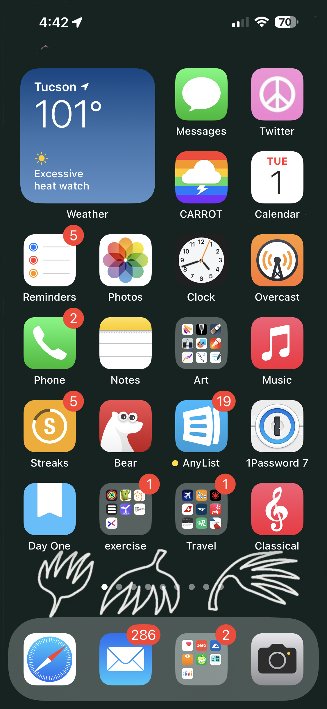

August 2023
Apple and iOS news
Air Canada announced Apple TV+ Takes Flight with Air Canada: `First airline in Canada, second airline globally to offer Apple TV+ original programming onboard'.
Apple is inviting developers to a one-day developer lab to experience their visionOS, iPadOS, or iOS apps running on Vision Pro.
As of July 26, Apple Photostream has shut down permanently. Apple encourages users to use iCloud Photos.
A man was saved by his iPhone after his car plummeted 400 feet over cliff on Mt. Wilson, reports KCAL News. He had an iPhone 14 with the new features 1). Crash Detection and 2). Emergency SOS via satellite. His iPhone automatically detected a severe car crash, and secondly, the iPhone automatically sent a text to an emergency relay center via satellite connection, as the crash was not within cellular coverage. The automatic message included precise location info. The local search and rescue team used the info to rescue the man via helicopter. `A Los Angeles County Sheriff's Department helicopter was able to lower a pair of rescuers to hoist the man to safety. "He was 400 feet down in a canyon with virtually no way out," said Steve Goldsworthy, the Rescue Operations Leader of Montrose Search and Rescue. "So, who knows when, or if, we would've located him." Watch:
RESCUE: At 10:51pm on Fri we were alerted to a car 400’ over a cliff by the driver’s iPhone 14 crash detection. Location was Mt Wilson Rd. After locating him we guided in an @LACoFireAirOps copter. Suffered head trauma. @LASDHQ @CVLASD @KCBSKCALDesk @NBCLA @ABC7 @FOXLA @cnnbrk pic.twitter.com/jXdpuDL7Hk
— Mike Leum (@Resqman) July 22, 2023
iOS 17 beta
iOS 17 beta keeps getting updated.
15 Hidden iOS 17 Features You Need to Know About, reports Macrumors in this chapterized video, including, Face ID Lock for Private Browsing, Private Browsing Default Search Engine, Shake to Undo Move Apps, Grocery Sorting in Reminders, Autofill Email Verification Codes, Clean Verification Codes Automatically, Pinch to Crop Photos, Spotlight Toggles, Visual Look Up in Photos, New Custom Stickers & Effects, Rearrange Messages Apps, Share AirTags with Other Users, Level Tool in Camera, Shazam in Dynamic Island, Screen Distance. Watch:
Also, watchOS 10 beta has many new features, including, Smart Stack Widgets, Redesigned Apps, Control Center & App View Changes, New Watch Faces, Mood Tracking in Mindfulness, as demonstrated in this video:
And iPadOS 17 beta recent features found in the beta release, including Custom Lock Screen, Widgets on Lock Screen/Interactive Widgets, Health App, PDF & Notes, Stage Manager Updates, as shown in the video:
Keep in mind that these are beta releases and it's possible these will evolve by the time iOS 17 releases officially in the fall but a version of these will remain.
Remember iPods? iOS developer Dylan MacDonald has documented all colors and generations just for fun:
I am most exited to share a project I have been working on for quite a while: Every iPod Color!
— 🅳🆈🅻🅰🅽 (@DylanMcD8) July 15, 2023
I noticed that there was no easy way to figure out the official color names for each iPod. So, I put in a lot of research and design work to fix that.https://t.co/7VsVtNvNfS pic.twitter.com/p2MHTiLCoF
photography
The Winners of 2023 iPhone Photography Award have been announced! Check them out, all are excellent photos. Including one from Tucson :-)
AirTags
AirTag helps catch a thief: Decoy safe with tracked teddy bear helped police locate serial bar thief, reports WMBFNews.
AirTag ingenuity continues: Lost luggage, bull statues, stolen cars, and... potted plants? reports 9to5Mac. `A couple in Philadelphia turned to AirTags after they repeatedly had their potted plants stolen from their front porch…'
AirTags can be used to help locate items you own. However, in addition to this, Shane Whatley shows us how they can be used for much more. How to use your AirTags to trigger shortcut automations, and control your smart home, change music, open apps, and much, much more. Watch:
Macrumors reports that A 4-pack of AirTags on Amazon is discounted at $84.99.
iOS apps
Sky Guide is an astronomy app with AR features for your iPhone and iPad. They also announced it will be available on Vision Pro.
Pencil Planner lets you write and scribble on your iOS calendar the way you would on a printed sheet. It accesses all of your existing calendars (Apple, Google, Outlook, etc.)
Recall that Flighty got an Apple design Award in June and we featured it at last month's iPUG meeting. A few days ago, they released v3 which introduces a new sharing functionality that's free to use. See an overview by Macrumors. `To use Flighty Friends, you just need to connect with a person, and then you can see each other's trips automatically, eliminating the need to send over flight data like airline, flight number, and arrival times. The app will send regular notifications for events like delays, takeoffs, and landings, and there are customizable notifications so each user can decide how much info they want to see.'
podcasts
Martha Stewart interviewed by Kara Swisher: Martha Stewart Makes No Apologies for Being Perfect. In this podcast interview, Kara and her producer take a field trip to Martha Stewart's 156-acre estate. They discuss Martha Stewart's interest and involvement in tech, parties with Bill Gates, doing a Sport Illustrated cover at age 81, and big ideas like "MarthaAI". A very interesting interview.
The Gilgo Beach Serial Killer Case Explained (with Robert Kolker). The arrest of a suspected serial killer charged with murdering 3 young women has been in the news recently. Robert Kokler is the journalist and author of the 2013 book `Lost Girls'. In this podcast interview by Preet Bharara, the author discusses the case and the history behind it. It's only 22 minutes long and it's very informative about the case and why it went unsolved for so long.
tips & tricks
Would you like to change the icon of an iOS app you use? Yes you can change it to anything you like: How to Change App Icons on Your iPhone's Home Screen . The steps are simple. Olga used this technique to change Twitter's new ("X") icon to a pink peace symbol and re-named the app `Twitter':

gadgets & accessories
Bernie told us about Blue Driver. (This similar but different from Automatic, for those who recall the old Automatic gadget.) Bernie recently used Blue Driver to identify the issues in his car that were preventing him from passing the inspection for his annual car registration.
An overview of AirTags accessories & holders, by Macrumors.
watch
[ RUMOR ] A new Apple Watch Ultra is widely expected. It is rumored to be available in Black Titanium.
[ RUMOR ] Also, Watch Series 9, is rumored to have a pink color option .
general apps & services
Take Control Books are a go-to reference for iOS, macOS and related topics. They are offering a promotion for 33% off with the code summerfest2023. The promotion runs through August 8.
Roger H. told us about Refurb.me.
next iPUG meeting
Our next iPUG meeting will be on October 3. Apple is expected to hold a keynote address sometime in mid-September, and we will discuss all the announcements at our next iPUG meeting.